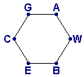

Now, the connections BG, AE, and CW must still be inserted. Only one of them can be drawn inside the cycle, since two or more would cross. Similarly, only one of them can be drawn outside the cycle, since two or more would cross. Therefore, it is impossible to insert all three of the remaining connections without creating a crossing.
If you, however, do not regard the houses as points, the problem is solvable. For example, if the owner of house A would allow that one of the connections to C is laid under his house, the following solution is possible: